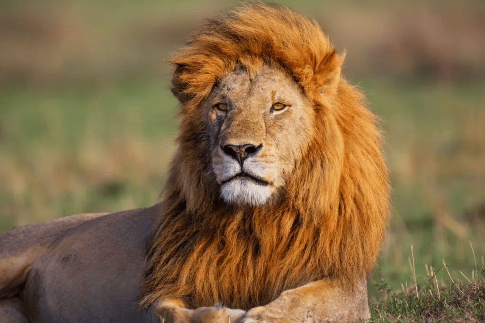
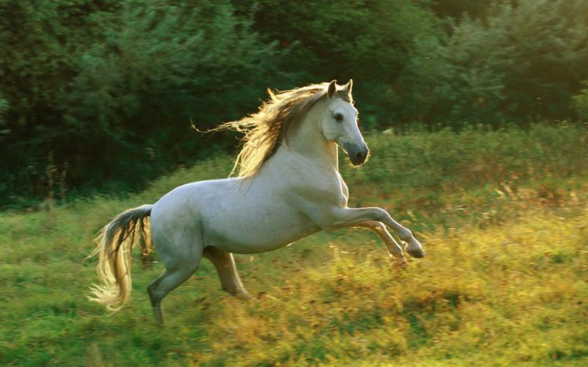
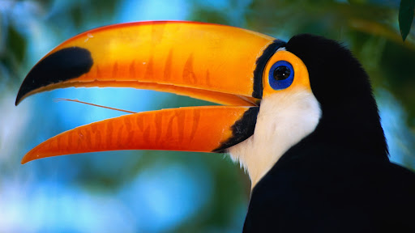
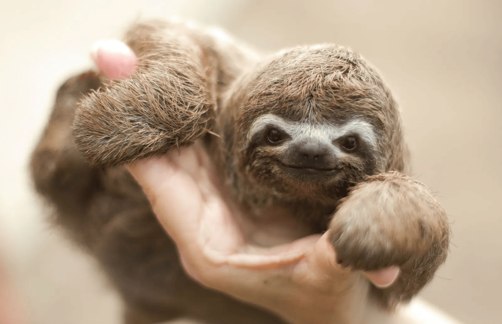

El león (Panthera leo) es un mamífero carnívoro perteneciente a la familia de los felinos. Se le considera uno de los grandes felinos y es conocido por su imponente melena, que es más prominente en los machos. Los leones son sociales en comparación con otros felinos, viviendo en grupos llamados manadas. Se encuentran principalmente en África subsahariana y en una pequeña población en el noroeste de la India. Son conocidos por su papel como depredadores en la cima de la cadena alimentaria, cazando principalmente grandes herbívoros.

El caballo (Equus ferus caballus) es un mamífero herbívoro domesticado que ha acompañado a la humanidad a lo largo de la historia. Estos animales son conocidos por su velocidad, fuerza y resistencia, lo que los ha hecho esenciales en diversas culturas para el transporte, la agricultura y el deporte. Los caballos son animales sociales que forman lazos fuertes dentro de sus grupos, y su comunicación incluye una variedad de vocalizaciones y lenguaje corporal. Existen numerosas razas, cada una adaptada a diferentes usos y entornos, desde caballos de carrera hasta ponis de compañía.El panda gigante (Ailuropoda melanoleuca) es un mamífero nativo de China, famoso por su distintivo pelaje blanco y negro. Su dieta consiste casi en su totalidad de bambú, lo que le ha llevado a desarrollar adaptaciones especiales en su sistema digestivo. Aunque pertenece a la familia de los osos, el panda tiene características únicas que lo diferencian, como su dieta especializada y su comportamiento solitario. Actualmente, el panda es un símbolo de conservación, ya que ha estado en peligro de extinción debido a la pérdida de hábitat y la baja tasa de reproducción.El perro (Canis lupus familiaris) es un mamífero domesticado que pertenece a la familia de los cánidos. Considerado el mejor amigo del hombre, ha sido compañero y ayudante del ser humano a lo largo de la historia, desempeñando roles como guardián, cazador y animal de compañía. Los perros son conocidos por su lealtad y capacidad de entrenamiento, así como por su agudo sentido del olfato y su habilidad para interpretar las emociones humanas. Existen cientos de razas, cada una con características y temperamentos únicos, adaptadas a diversas funciones y estilos de vida.

El tucano es un ave tropical de la familia Ramphastidae, conocida por su colorido plumaje y su prominente pico. Estas aves se encuentran principalmente en América Central y del Sur, habitando selvas y bosques tropicales. Su pico, que puede ser más grande que su cuerpo, no solo es atractivo visualmente, sino que también les ayuda a alcanzar frutas y a regular su temperatura corporal. Los tucanos son animales sociales que suelen moverse en grupos y son importantes dispersores de semillas en su ecosistema, contribuyendo así a la salud de los bosques.

El perezoso es un mamífero arborícola que pertenece a la familia Bradypodidae. Originario de las selvas tropicales de América Central y del Sur, es conocido por su estilo de vida extremadamente lento y su capacidad de pasar la mayor parte del día durmiendo y descansando en las copas de los árboles. Su dieta se compone principalmente de hojas, lo que contribuye a su metabolismo lento. Los perezosos tienen adaptaciones únicas, como un sistema digestivo especializado que les permite procesar su alimento de manera eficiente.